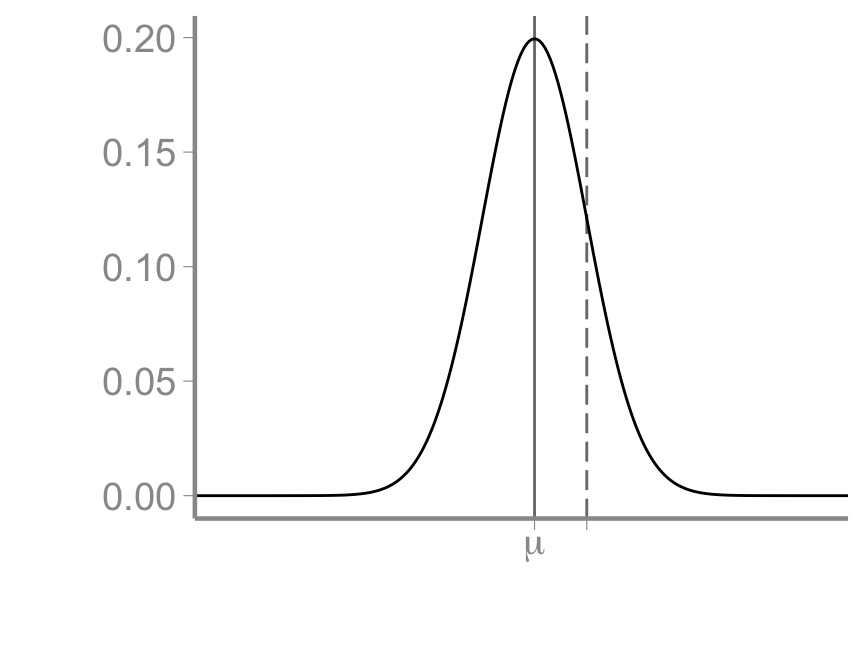
FANR 6750
Fall 2026
In lecture 2, we discussed linear models as a flexible way to quantify relationships between variables
\[y_i = \beta_0 + \beta_1 * x_i + \epsilon_i\] \[\epsilon_i \sim normal(0, \sigma)\]
In lecture 3, we discussed sampling and statistical inference
Samples allow us to estimate population parameters but also introduce error due to the random nature of sampling
Standard errors and confidence intervals allow us to quantify the magnitude of sampling error
In this lecture, we will put these concepts into practice by fitting and interpreting simple linear models
One common research objective is to determine whether the mean of a population differs from some specific value or whether the mean of two populations differ from each other
Is the average size of hatchery-raised fish above the threshold needed for release?
Does a newly developed plant variety have better disease resistance than the current variety?
Does taking FANR6750 improve students’ statistical knowledge compared to students who don’t take FANR6750?
Although these may seem like simple questions, answering them still requires statistical models. Why?
The questions on the previous slide ask whether a population mean differs from a specific value or another population’s mean

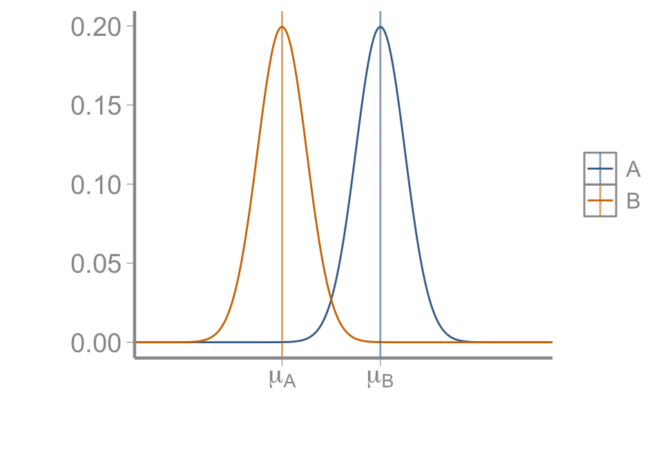
But remember, we don’t know the population means. They has to be estimated. How?
The questions on the previous slide ask whether a population mean differs from a specific value or another population’s mean
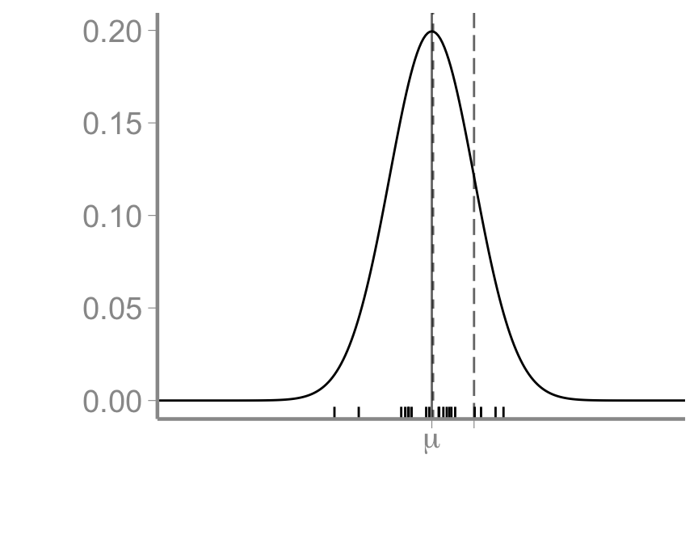
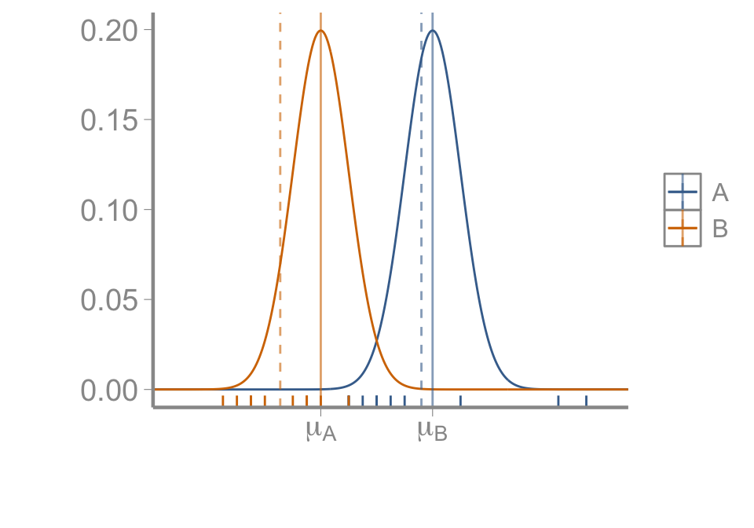
But remember, we don’t know the population means. They has to be estimated. How?
Our best estimates of the population means are the sample means
But we know the sample means will never equal the population means
Because of the uncertainty caused by this sampling error, answering even these simple questions requires statistical models
In this lecture, we will learn to formulate these questions as linear models
Fortunately, the models used for these examples are relatively simple
Although simple, the models in this lecture will serve as the foundation for all of the more complex models we will use later in the semester
This lecture will focus on model structure and interpretation of parameters. Later lectures will focus on using model output for inference about population parameters
We are interested in whether a certain brand of scale provides accurate mass measurements
Hypothesis
Measurement error, measured as the difference between the mass indicated by the scale and the true mass of an object, is 0 (on average)
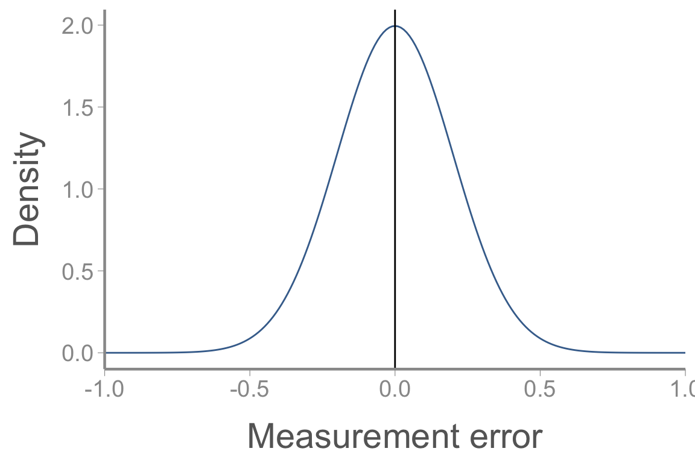
Data collection:
Randomly sample 10 scales of the same make and model
Weigh a test object (of known mass) on each scale and record the difference between the measured and true mass
Data:
-0.062, -0.38, 0.85, -0.58, 0.53, 0.09, 0.31, 0.77, 0.59, -0.17
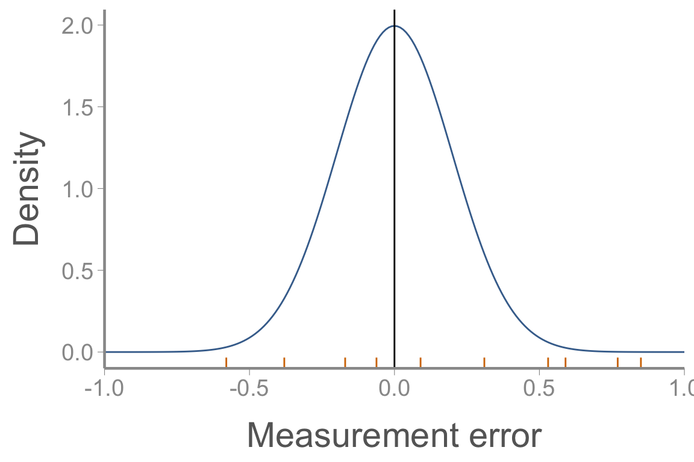
\[y_i = \beta_0 + \epsilon_i\]
\[\epsilon_i \sim normal(0, \sigma)\]
\(\beta_0\) is the expected (or average) measurement error across all scales
\(\epsilon_i\) is residual error associated with each measurement
This is most simple linear model we can construct
If our hypothesis is correct, \(\beta_0 = 0\)
Question: What is the value of \(\beta_0\) if our hypothesis is wrong?
Data:
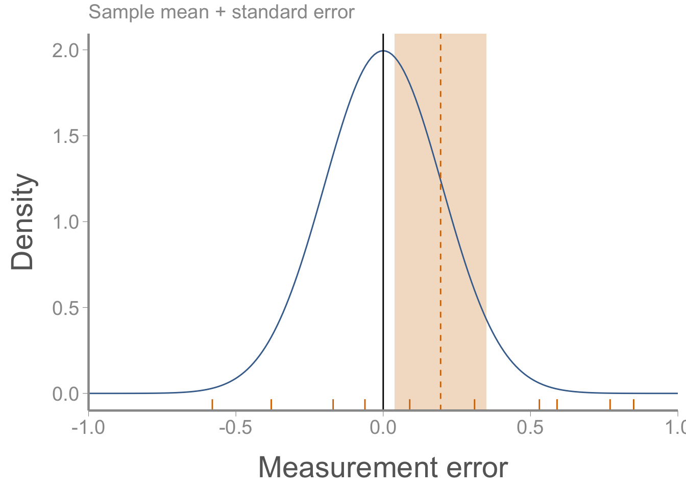
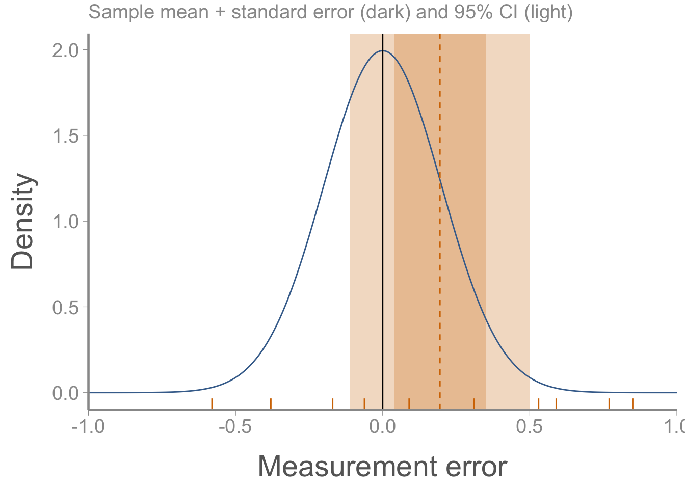
Because this is a linear model, we can fit it using the lm function:1
Call:
lm(formula = y ~ 1)
Residuals:
Min 1Q Median 3Q Max
-0.7748 -0.3378 0.0052 0.3802 0.6552
Coefficients:
Estimate Std. Error t value Pr(>|t|)
(Intercept) 0.195 0.156 1.25 0.24
Residual standard error: 0.492 on 9 degrees of freedomThe (Intercept) estimate corresponds to \(\beta_0\) (look familiar?)
The standard error calculated by R is the same as we calculated by hand
We will discuss whether there is evidence that \(\beta_0 \neq 0\) in the next lecture
Congratulations, you fit your first linear model in R2
The model we just fit has a corresponding “test” that you may encounter: the one-sample t-test
R has a built-in function to fit t-tests:3
Because this is such a simple model, we can calculate \(\beta_0\) and the standard error by hand very easily
Again, we will discuss how to use this information to determine whether \(\beta_0\) is or is not equal to 0 in another next lecture
But that is it - the first model of the semester (fit three ways - lm(), t.test(), and by hand)
We are interested in determining how urban development influences the abundance of strawberry poison-dart frog (Oophaga pumilio)
Hypothesis:
Strawberry frog abundance will differ between islands with high urban development and islands with low urban development
Field procedure:
\(n=10\) plots are established on one high-development island and one low-development island
Within each plot, strawberry frogs are counted within 5 randomly-located quadrats
Data:
Low development: 16, 14, 18, 17, 29, 31, 14, 16, 22, 15
High development: 2, 11, 6, 8, 0, 3, 19, 1, 6, 5
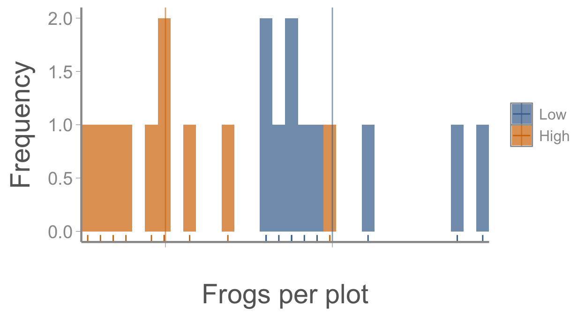
R
Call:
lm(formula = Frogs ~ Development, data = frogdata)
Residuals:
Min 1Q Median 3Q Max
-6.10 -4.12 -1.70 2.12 12.90
Coefficients:
Estimate Std. Error t value Pr(>|t|)
(Intercept) 19.20 1.87 10.29 5.7e-09 ***
DevelopmentHigh -13.10 2.64 -4.97 1e-04 ***
---
Signif. codes: 0 '***' 0.001 '**' 0.01 '*' 0.05 '.' 0.1 ' ' 1
Residual standard error: 5.9 on 18 degrees of freedom
Multiple R-squared: 0.578, Adjusted R-squared: 0.555
F-statistic: 24.7 on 1 and 18 DF, p-value: 1e-04In this example, R returns two parameter estimates: (Intercept) and DevelopmentHight
To interpret this output, we need to know how R codes categorical predictors…
A “simple” linear model
\[\underbrace{\LARGE E[y_i] = 7 + 3.5 \times x_i}_{Deterministic}\]
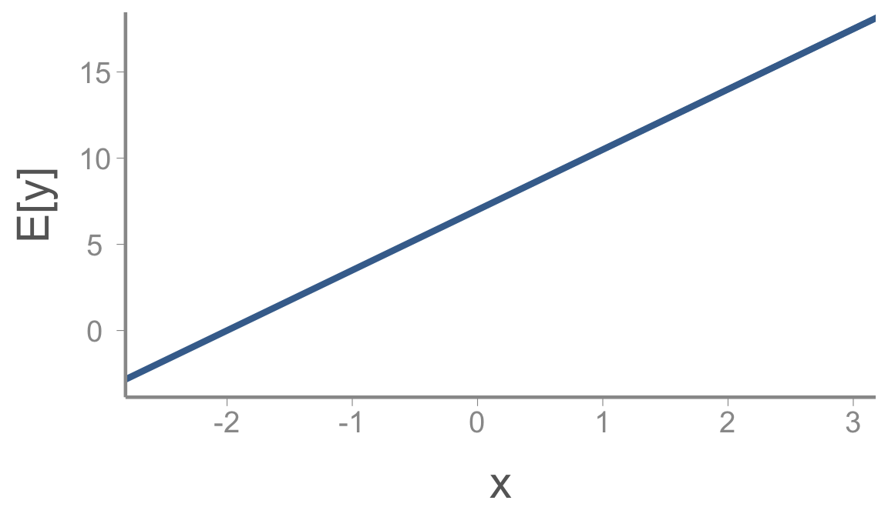
A “simple” linear model
\[\underbrace{\LARGE E[y_i] = 7 + 3.5 \times x_i}_{Deterministic}\]
\[\underbrace{\LARGE y_i \sim normal(E[y_i], \sigma=0.25)}_{Stochastic}\]
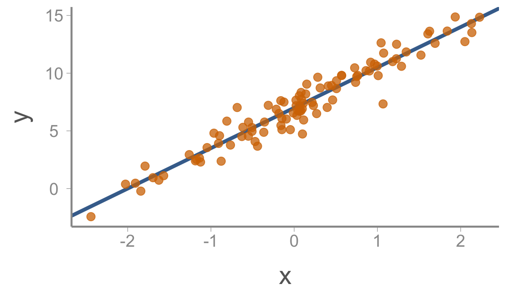
Same model, different \(\Large x\)
\[\underbrace{\LARGE E[y_i] = 7 + 3.5 \times x_i}_{Deterministic}\]
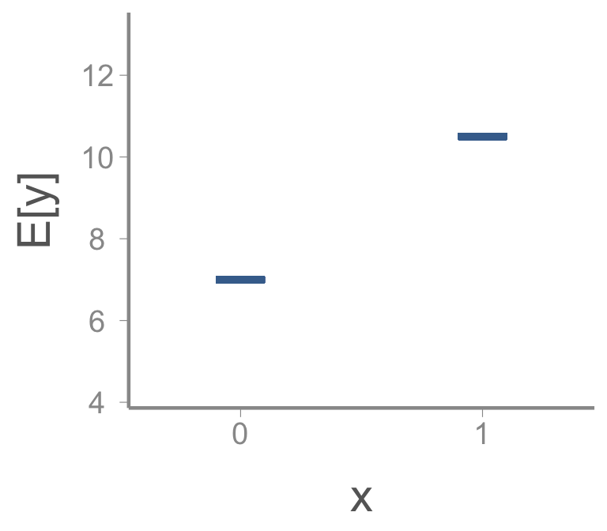
Same model, different \(\Large x\)
\[\underbrace{\LARGE E[y_i] = 7 + 3.5 \times x_i}_{Deterministic}\]
\[\underbrace{\LARGE y_i \sim normal(E[y_i], \sigma=0.25)}_{Stochastic}\]
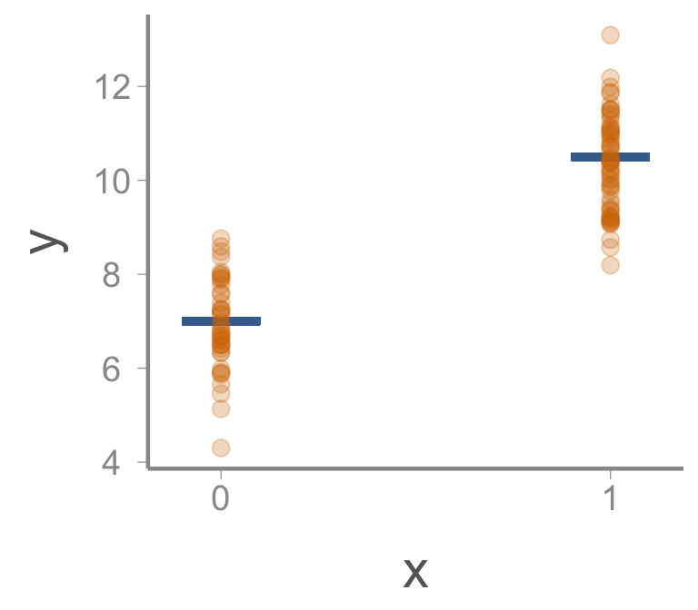
\[\LARGE E[y_i] = \beta_0 + \beta_1 x_i\]
When \(x = 0\):
\(E[y] = \beta_0\)
What is the interpretation of \(\beta_0\)?
When \(x = 1\):
\(E[y] = \beta_0 + \beta_1\)
What is the interpretation of \(\beta_1\)?
RWhen you include a categorical predictor (factor or character object) in your model, R recodes it is a dummy variable
For a predictor with two levels, one level gets coded as \(0\) and the other as \(1\)
For unordered factors or character objects, levels are determined by alphabetical order
For ordered factors, levels are determined by factor levels
R# A tibble: 2 × 5
term estimate std.error statistic p.value
<chr> <dbl> <dbl> <dbl> <dbl>
1 (Intercept) 19.2 1.87 10.3 0.00000000573
2 DevelopmentHigh -13.1 2.64 -4.97 0.000100 The (Intercept) estimate (\(\beta_0\)) is the expected number of frogs in a low-development plot
The DevelopmentHigh estimate (\(\beta_1\)) is the difference between low-development and high-development plots
Question: Are there fewer frogs in high-development plots?
In this case, we can also fit the model “by hand”
The parameter estimates are:
mu_high <- mean(frogdata$Frogs[frogdata$Development == "High"])
mu_low <- mean(frogdata$Frogs[frogdata$Development == "Low"])
(beta_0.hat <- mu_low)[1] 19.2[1] -13.1How do we calculate the standard errors?
How do we calculate the standard errors?
Because we have samples from two populations (low and high development), we have to use the pooled variance of both samples to calculate the correct standard errors:
\[\large s^2_p = \frac{(n_L − 1)s^2_L + (n_H − 1)s^2_H}{n_L + n_H − 2}\]
How do we calculate the standard errors?
With the pooled variance calculated, we can calculate the standard errors. For the intercept:
\[SE_{\beta_0} = \sqrt{\frac{s^2_p}{n_L}}\]
[1] 1.866For the slope:
\[SE_{\beta_1} = \sqrt{\frac{s^2_p}{n_L} + \frac{s^2_p}{n_H}}\]
[1] 2.638What is the interpretation of these standard errors?
As before, the model we just fit has a corresponding “test” that you may encounter: the two-sample t-test
Welch Two Sample t-test
data: Frogs by Development
t = 5, df = 18, p-value = 1e-04
alternative hypothesis: true difference in means between group Low and group High is not equal to 0
95 percent confidence interval:
7.554 18.646
sample estimates:
mean in group Low mean in group High
19.2 6.1 Used to test whether the means of two population are different
Results are exactly the same as lm
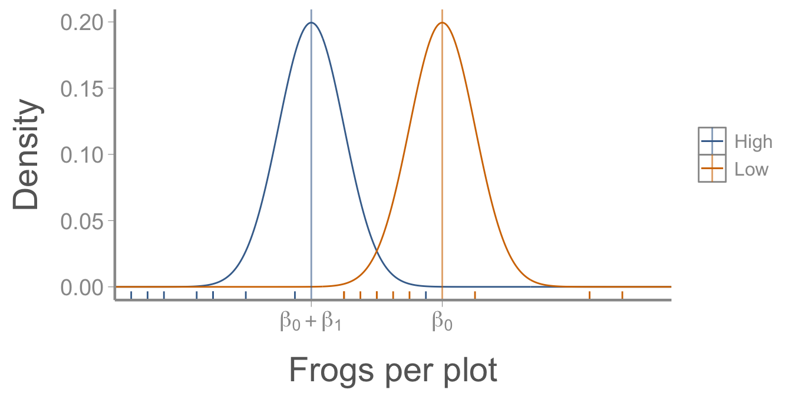
By default, the linear model approach provides the mean of the reference group and the difference in the group means
This version of the linear model formulation is usually referred to as the effects parameterization
We can easily calculate the mean of group 2 from the linear model as \(\beta_0 + \beta_1\)
We can also recode the model in R to provide the group means (the means parameterization)
The simplest linear model we can construct tests whether the mean of a sample is different from some null value (usually 0)
The same linear model can be extended to test whether the mean of two groups differ from each other
The lm() function uses dummy variables, i.e., coding one treatment level as 0 and the other as 1
By default, the intercept is the mean of the reference group and the slope parameter is the difference between the group means
This model is the same as a two-sample t-test
The alternative ways to fit this model (t-test, effects parameterization, means parameterization) provide the exact same information
Next time: Null hypothesis testing
Reading: Fieberg chp. 1.10
In R’s formula syntax, a linear model that contains only an intercept value is written by putting a 1 on the right hand side of the formula. The summary() function is used to print the output of the fitted model
Simple, right?
The mu argument is used to specify the null value we want to compare the population mean to. The default is 0, so adding the mu = 0 argument is not necessary in this case, but was included so demonstrate how to test values other than 0